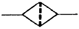
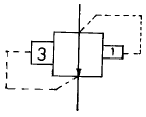
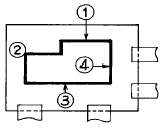
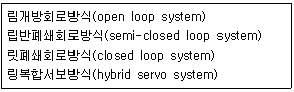
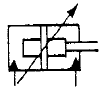
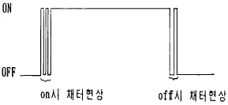

금형제작기능장 (2002-07-21 기출문제)
1과목: 임의 구분
1. 압축공기 윤활기의 원리는 ?
- 벤투리의 원리
- 연속의 법칙
- 베르누이의 원리
- 파스칼의 원리
(정답률: 알수없음)

2. 유압 실린더의 출력을 가장 올바르게 설명한 것은 ?
- 유압 실린더에 공급된 압력
- 유압 실린더 튜브에 작용하는 힘
- 피스톤 로드에 의해 전달되는 기계적인 힘
- 유압 실린더 헤드가 받는 힘의 중량
(정답률: 알수없음)
3. 다음 그림에 해당되는 용어는 ?

- 에어드라이어
- 필터
- 드레인 배출기
- 열 교환기
(정답률: 알수없음)
4. 공기압 장치 중 공기압회로의 이물질을 제거하는 장치를 무엇이라고 하는가 ?
- 윤활기
- 필터
- 조절기
- 에어탱크
(정답률: 알수없음)
5. 다음 기호의 명칭으로 올바른 것은 ?

- 파일럿 작동형 시퀀스밸브
- 무부하 릴리프밸브
- 일정비율 감압밸브
- 브레이크밸브
(정답률: 알수없음)
6. 표면경화법 중 침탄법과 질화법의 장단점을 비교한 것으로 잘못된 것은?
- 질화층의 경도는 침탄층보다 낮다.
- 침탄법은 침탄 후에 열처리가 필요하다.
- 질화법보다 침탄법이 단시간 내에 같은 경화 깊이를 얻을 수 있다.
- 질화법은 침탄법 보다 변형이 적다.
(정답률: 알수없음)
7. 고주파 담금질의 장점이 아닌 것은?
- 내부응력이 발생하지 않는다.
- 산화가 일어나지 않는다.
- 결정입자의 조대화가 일어나지 않는다.
- 탈탄현상이 발생하지 않는다.
(정답률: 알수없음)
8. 다음 중 스프링(spring)강의 탄성한계를 높이기 위하여 첨가하는 원소로 가장 적당한 것은?
- Mn
- Cr
- Mo
- Si
(정답률: 알수없음)
9. 비커스 경도기에서 다이아몬드 사각추의 꼭지각은 몇 도 인가?
- 90°
- 118°
- 136°
- 120°
(정답률: 알수없음)
10. 스프링용 인청동을 적당히 냉간가공 하는 이유로 가장 적당한 것은?
- 탄성한도를 높이기 위해
- 주조성을 향상시키기 위해
- 절삭성을 개선시키기 위해
- 취성을 높이기 위해
(정답률: 알수없음)
11. 다이스 강의 종류 중 냉간가공용 재료가 아닌 것은?
- Cr강
- Cr-Mo-V강
- Fe-W-Cr강
- W-Cr강
(정답률: 알수없음)
12. KS기호에서 SM45C의 숫자 45는 무엇을 나타내는가?
- 재질의 인장강도
- 탄소의 평균 함유량
- 재질의 항복강도
- 일반구조용 강판의 분류수자
(정답률: 알수없음)
13. 다음 중 합성수지 제품의 사출시에 생기는 수축에 대한 설명이 가장 바르게 된 것은?
- 성형품 두께와는 상관 없다.
- 두꺼운 부분에 생긴다.
- 두께가 얇은 부분에 생긴다.
- 수축은 성형품에 아무런 영향을 주지 않는다.
(정답률: 알수없음)
14. 금형내의 유로과정 중 가장 알맞는 것은 ?
- 성형기노즐-스프루-러너-게이트-오버플로 -에어벤트
- 성형기노즐-러너-스프루-게이트-오버플로 -에어벤트
- 성형기노즐-게이트-스프루-러너-오버플로 -에어벤트
- 성형기노즐-스프루-러너-게이트-에어벤트-오버플로
(정답률: 알수없음)
15. 열가소성 수지 중 공업용 수지에 해당 하는 것은?
- 폴리 프로필렌
- ABS 수지
- 폴리 에틸렌
- 폴리 아미드
(정답률: 알수없음)
16. 플라스틱 금형 설계시 가공을 고려한 설계 사항이 아닌 것은 다음 중 어느 것인가 ?
- 게이트의 위치
- 파팅 라인
- 언더컷의 처리
- 치수 정밀도
(정답률: 알수없음)
17. 사출 성형기의 형체장치는 직압식, 토글식, 토글직압식이 있다. 직압식의 특징이 아닌 것은?
- 내구력이 크다.
- 금형의 설치 조정이 가장 쉽다.
- 소요동력이 적다.
- 보수가 가장 쉽다.
(정답률: 알수없음)
18. 금형의 분할면에 성형수지가 흘러들어가 제품의 불필요한 부분이 달려 나오는 가장 큰 원인에 해당되는 것은 ?
- 사출압력 유지시간이 짧은 경우
- 게이트 수가 많은 경우
- 형체력이 부족한 경우
- 수지온도가 낮은 경우
(정답률: 알수없음)
19. "사출 성형기의 가소화 능력은 가열 실린더가 ( ) 어느 정도의 성형 재료를 가소화할 수 있는 가를 나타낸다." ( )안에 들어갈 말은?
- 매초당
- 매분당
- 매시간당
- 매일
(정답률: 알수없음)
20. 피어싱다이(piercing die)에서 스트리퍼 안내 방식을 이용하였을 경우 가장 큰 장점은?
- 펀치의 수명이 길어진다.
- 다이의 굽힘을 방지한다.
- 다이의 기울어짐을 방지한다.
- 다이의 측압력를 방지한다.
(정답률: 알수없음)
2과목: 임의 구분
21. 다음 중 압출가공에서 윤활제의 가장 큰 구비 조건은?
- 내식성
- 내열성
- 내충격성
- 내마모성
(정답률: 알수없음)
22. 프로그레시브 금형의 장점이 아닌 것은?
- 제품의 정밀도가 높은 것에 제작이 용이하다.
- 대량생산에 적합하고 작업능률이 좋다.
- 드로잉 또는 굽힘, 성형 가공을 포함하는 가공에도 무리없는 형상으로 할 수 있다.
- 복잡한 형상의 제품도 몇 개의 스테이지로 나누어서 간단하고 견고한 금형 구조로 가공할 수 있다.
(정답률: 알수없음)
23. 전단 가공된 슬러그가 다이면 위로 올라오면 제품에 흠을 내게 된다. 슬러그 상승현상이 발생되었을 때의 대책으로서 가장 거리가 먼 것은 ?
- 펀치 내부에 키커핀(Kicker Pin)을 설치한다.
- 소재에 윤활유를 사용한다.
- 펀치의 스트로크를 약간 더 내린다.
- 클리어런스를 균일하게 맞춘다.
(정답률: 알수없음)
24. 직경이 40mm이고, 높이가 30mm인 원통용기를 드로잉가공에 의해 만들려고 할 때 필요한 블랭크의 직경은 얼마인가? (단, 판두께 및 트리밍 여유는 무시한다.)
- 70mm
- 80mm
- 90mm
- 100mm
(정답률: 60%)
25. U형 굽힘에서 쿠션패드의 힘이 제품에 미치는 가장 큰 영향은 ?
- 스프링 백 현상을 방지한다.
- 제품 밑 부분의 만곡현상을 방지한다.
- 재료의 두께 감소를 줄여준다.
- 굽힘압력을 감소시켜 준다.
(정답률: 알수없음)
26. 블랭킹 하여 제품의 치수를 ø 50mm로 하려고 한다. 다음 중 가장 알맞는 사항은?
- 펀치를 ø 50mm로 하여야 한다.
- 펀치를 ø 50.2mm로 하여야 한다.
- 다이를 ø 50mm로 하여야 한다.
- 다이를 ø 50.2mm로 하여야 한다.
(정답률: 알수없음)
27. 다음 중 프레스의 선택 방법 중 가장 옳지 않은 것은 ?
- 가공방법, 가공공정의 올바른 결정
- 생산량의 정도
- 소재의 모양, 품질 및 치수와의 관련
- 숙련 기능자의 확보
(정답률: 알수없음)
28. 주철과 같은 메진 가공재료를 저속으로 절삭할 때 발생하는 칩의 형태는?
- 전단형
- 유동형
- 경작형
- 균열형
(정답률: 알수없음)
29. 다음 중 NC 공작기계의 특징에 속하지 않는 것은?
- 숙련도의 불필요
- 불량품의 감소
- 치공구의 절감
- 반복성과 재현성 곤란
(정답률: 알수없음)
30. 다음 초음파 가공의 특징을 설명한 것 중 틀린 것은?
- 다이아몬드, 수정, 천연보석 등에서 효율적인 가공이 가능하다.
- 이 가공법은 굳고 취약한 재료를 가공하는데 적합하다.
- 납, 구리 등 무른 재료에서는 가공 속도는 느리나, 공구는 거의 소모되지 않는다.
- 공구의 재료는 황동, 피아노선, 모넬메탈 등이 쓰인다.
(정답률: 알수없음)
31. 와이어 컷 방전가공기를 이용하여 그림과 같은 굵은 형상의 펀치를 제작하려고 한다. 스타트 구멍은 어디로 하면 가장 좋은가? (단, 계단 모양이 펀치 날 부분이다.)

- ① 위치
- ② 위치
- ③ 위치
- ④ 위치
(정답률: 알수없음)
32. 공작물과 같은 치수비로 제작된 모델에 따라 제품을 절삭하는 것은 ?
- 정면절삭
- 테이퍼절삭
- 모방절삭
- 외경절삭
(정답률: 알수없음)
33. 숫돌 바퀴의 3요소에 해당되지 않는 것은?
- 결합제
- 기공
- 숫돌 입자
- 입도
(정답률: 알수없음)
34. 금형을 표준화하면 좋은 점들이 있다. 다음 가장 관계가 먼 것은?
- 금형 교환시간이 짧아진다.
- 금형 설계시간이 짧아진다.
- 금형 수명이 길어진다.
- 표준 부품을 많이 이용할 수 있다.
(정답률: 알수없음)
35. 일감의 평면이나 원주면에 정확한 간격으로 구멍을 뚫거나 다른 기계가공 작업에 사용하기 위하여 필요한 지그는 ?
- 리프지그
- 분할지그
- 채널지그
- 박스지그
(정답률: 알수없음)
36. 다음 중 드릴지그를 구성하는 3대 요소에 해당되지 않는 것은 ?
- 위치결정
- 체결
- 공구의 안내
- 공작물 받침대
(정답률: 알수없음)
37. 4개의 링크로 된 연쇄에서 그 순간 중심의 총수는 ?
- 4개
- 2개
- 6개
- 8개
(정답률: 알수없음)
38. 다음 중 드릴 지그 설계 순서를 기술한 것이다. 이중 가장 우선적으로 고려하여야 할 사항은 ?
- 지그의 높이와 두께 결정
- 부싱의 외경 결정
- 부싱의 내경 결정
- 드릴 지름의 결정
(정답률: 알수없음)
39. 원통체 공작물의 위치 결정 방법 중 중심을 항상 동일 위치에 설치되도록 지지하는 방법은 ?
- 척 지지구
- 평면 지지구
- 직각 지지구
- V-Block 지지구
(정답률: 알수없음)
40. 광파간섭 현상을 이용한 측정기는 ?
- 공구현미경
- 오토콜리메이터
- 옵티컬플랫
- NF식 표면거칠기 측정기
(정답률: 알수없음)
3과목: 임의 구분
41. 미터 나사에 대해 와이어의 지름 d=2.866mm의 3침을 사용하여 마이크로미터의 측정값 M=49.085mm를 얻었다. 이 나사의 유효지름은 몇 mm인가? (단, 피치 P는 2mm이다.)
- 34.755
- 36.219
- 38.755
- 42.219
(정답률: 알수없음)
42. 테스트 인디케이터와 비교할 때 다이얼 게이지의 특징이 아닌 것은 ?
- 측정범위가 넓다.
- 타원 측정이 용이하다.
- 직접 측정이 편리하다.
- 동적 측정이 가능하다.
(정답률: 알수없음)
43. N.P.L식 각도 게이지의 설명 중 틀린 것은 ?
- 게이지면을 반사면으로 사용하면 각도의 비교측정이 가능하다.
- 블록게이지와 같이 밀착하여 사용할 수 있다.
- 게이지 하나하나 및 조립후의 정도는 약 3∼6"가 된다.
- 조합할 때 홀더가 필요하다.
(정답률: 알수없음)
44. 1/20mm 버니어 캘리퍼스의 주척(어미자)과 부척(아들자)의 관계를 설명한 것 중 옳은 것은 ?
- 주척이 1눈금이 1mm, 부척의 눈금이 12mm를 25등분 한 것.
- 주척의 1눈금이 1mm, 부척의 눈금이 19mm를 20등분 한 것.
- 주척의 1눈금이 0.5mm, 부척의 눈금이 19mm를 25등분 한 것.
- 주척의 1눈금이 0.5mm, 부척의 눈금이 24mm를 25등분 한 것.
(정답률: 알수없음)
45. CAD 시스템의 입력장치 중 화면에 접촉하여 명령어 선택이나 좌표입력이 가능한 것은?
- 트랙 볼
- 라이트 펜
- 조이스틱
- 태블릿
(정답률: 알수없음)
46. 지역 통신망(LAN)시스템의 주요 특징이 아닌 것은 ?
- 가격면에서 저렴한 정보통신 시스템이다.
- 정보 통신망 구성요소 간에 신뢰성이 높다.
- 신규장비를 전송매체로 첨가하기가 어렵다.
- 자료의 전송속도가 빠르다.
(정답률: 알수없음)
47. CNC선반의 프로그램에서 G27의 의미는?
- 밀리(mm) 자료입력
- 인치(Inch) 자료입력
- 자동 원점 복귀
- 기계 원점 복귀 확인
(정답률: 알수없음)
48. 머시닝센터에서 4날 - ø 30 엔드밀을 사용하여 SM45C를 가공하고자 한다. 가공 프로그램에 얼마의 이송량으로 지령해야 가장 적당한가? (단, SM45C의 절삭속도는 80m/min, 공구의 날당 이송량은 0.5mm 이다.)
- 1200 mm/min
- 1500 mm/min
- 1700 mm/min
- 1900 mm/min
(정답률: 알수없음)
49. 현재 각종 CNC 공작기계에 이용되고 있는 서보제어방식은 다음의 4가지로 분류될 수 있다. 정밀도가 높은 순서에서 낮은 순서로 나열된 것은?

- 링-릿-립-림
- 림-립-릿-링
- 링-립-릿-림
- 링-립-림-릿
(정답률: 알수없음)
50. 다음은 물류시스템을 구성하는 서보시스템이다. 해당 사항이 아닌 것은 ?
- 보관시스템
- 수송시스템
- 가공시스템
- 하역시스템
(정답률: 알수없음)
51. 자동화 시스템을 구성할 때 주요 3요소에 해당되지 않는 것은 ?
- 센서
- 프로세서
- 액추에이터
- 소프트웨어
(정답률: 알수없음)
52. 다음 실린더 기호의 명칭을 설명한 것 중 옳은 것은?

- 램형실린더
- 단동 텔레스코프형 실린더
- 스프링붙이 복동 실린더
- 쿠션붙이 복동 실린더
(정답률: 알수없음)
53. 다음 중에서 부르동관에 대한 설명 중 가장 옳은 것은?
- 압력을 검출하는데 사용된다.
- 유량을 검출하는데 사용된다.
- 온도을 검출하는데 사용된다.
- 유속을 검출하는데 사용된다.
(정답률: 알수없음)
54. 기계적스위치가 ON-OFF할때 순간적인 상태에서 스위치의 접점이 단시간 이내에 단속한 후 최후 ON 또는 OFF로 낙착되는 현상을 채터라고 한다. 채터에 대한 설명중 틀린 것은?

- 리드스위치, 토글스위치, 로터리스위치 등의 접점스위치는 모두 채터가 나타난다.
- 강전회로에서의 채터는 응답이 빠르지 않아 무시해도 된다.
- 전자 회로에서는 오동작의 원인이 된다.
- 트랜지스터나 IC회로에서도 채터가 발생된다.
(정답률: 알수없음)
55. 공급자에 대한 보호와 구입자에 대한 보증의 정도를 규정해 두고 공급자의 요구와 구입자의 요구 양쪽을 만족하도록 하는 샘플링 검사방식은?
- 규준형 샘플링 검사
- 조정형 샘플링 검사
- 선별형 샘플링 검사
- 연속생산형 샘플링 검사
(정답률: 알수없음)
56. 표는 어느 회사의 월별 판매실적을 나타낸 것이다. 5개월 이동평균법으로 6월의 수요를 예측하면?
- 150
- 140
- 130
- 120
(정답률: 알수없음)
57. u 관리도의 공식으로 가장 올바른 것은?


(정답률: 알수없음)
58. 도수분포표를 만드는 목적이 아닌 것은?
- 데이터의 흩어진 모양을 알고 싶을 때
- 많은 데이터로부터 평균치와 표준편차를 구할 때
- 원 데이터를 규격과 대조하고 싶을 때
- 결과나 문제점에 대한 계통적 특성치를 구할 때
(정답률: 알수없음)
59. 설비의 구식화에 의한 열화는?
- 상대적 열화
- 경제적 열화
- 기술적 열화
- 절대적 열화
(정답률: 알수없음)
60. 모든작업을 기본동작으로 분해하고 각 기본동작에 대하여 성질과 조건에 따라 정해놓은 시간치를 적용하여 정미시간을 산정하는 방법은?
- PTS법
- WS법
- 스톱워치법
- 실적기록법
(정답률: 알수없음)